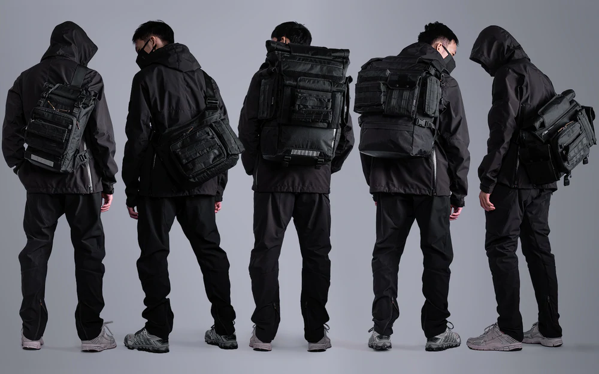
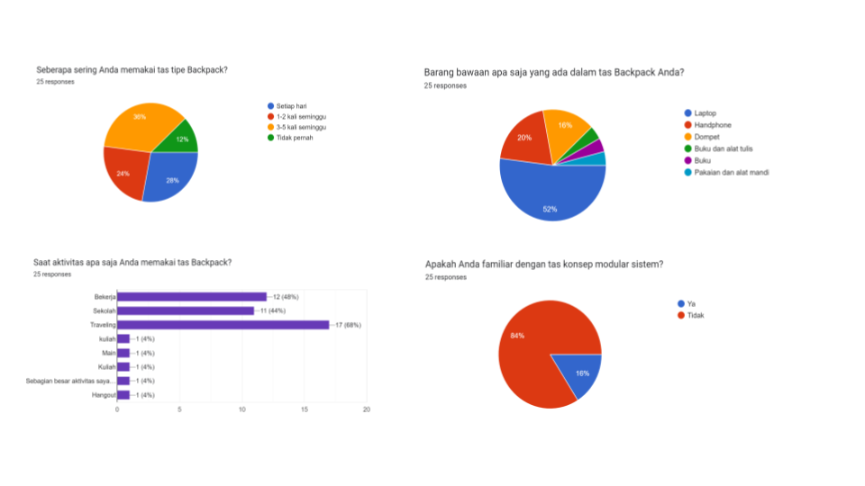
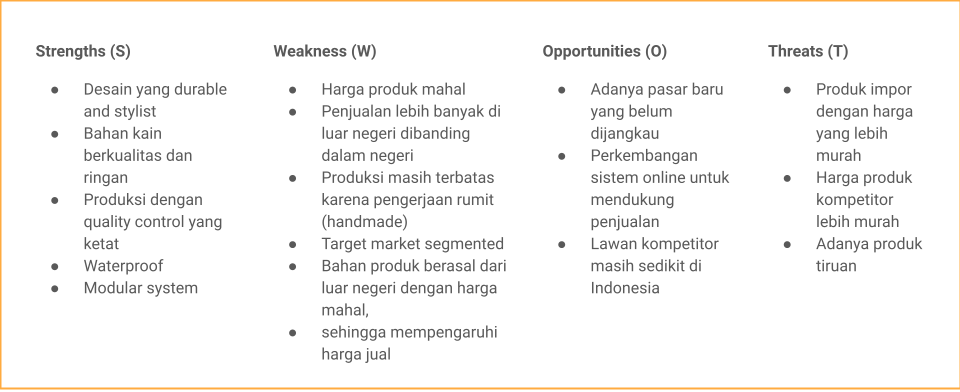
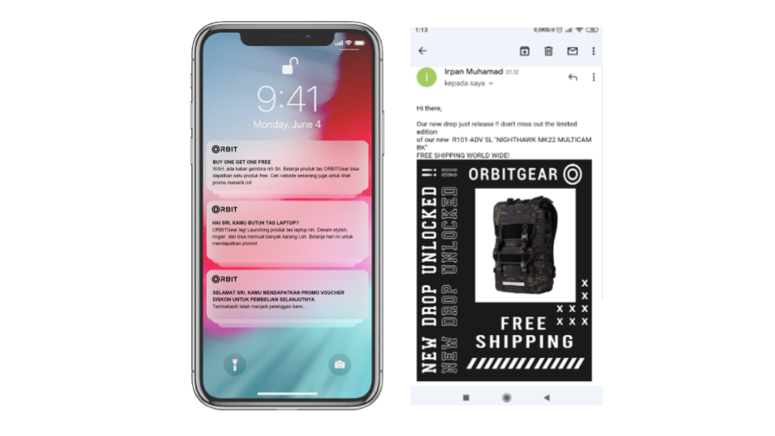
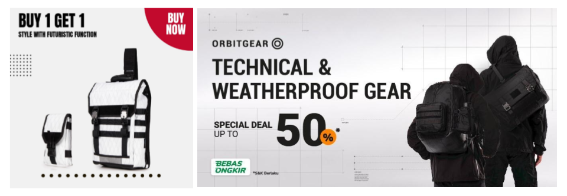
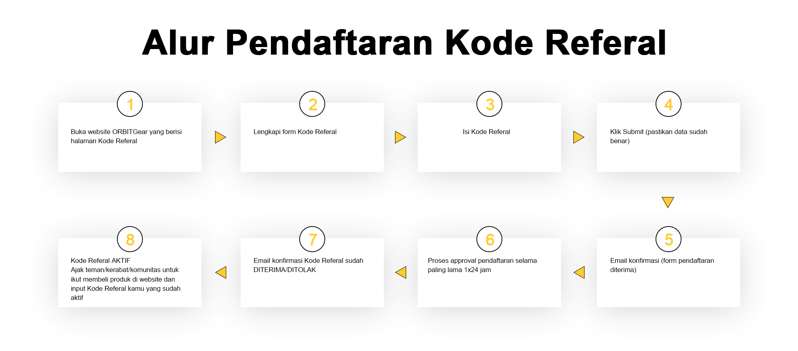

Taktik Pemasaran Produk — Studi Kasus OrbitGear
Studi kasus ini adalah tugas akhir dalam kelas intensif Digital Marketing oleh Digital Skola. Disusun tim EDM yang beranggotakan saya Sri Hadriana, M Irpan, dan Astri Riftiani.
Daftar Konten
Tentang Perusahaan
OrbitGear
Produk OrbitGear (src: orbitgear.id)
OrbitGear adalah perusahaan mode berupa tas ransel yang mengusung desain bertema teknologi dan militeristik (TechWear) yang dapat digunakan dalam berbagai aktivitas, seperti bekerja, jalan-jalan dan lain sebagainya. Produk menggunakan konsep produk modular. Artinya, sebuah produk bisa diintegrasikan dengan produk - produk yang ada sebelumnya.
Dirangkum dari berbagai sumber, trend techwear dari tahun ke tahun terus meningkat, namun belum banyak perusahaan yang mengusung tema techwear di Indonesia. ORBITGear ingin menjawab dan memenuhi kebutuhan atas meningkatnya permintaan terhadap fashion Techwear terutama di sektor tas.
Visi
Memproduksi dan memasarkan secara luas produk tas ransel yang fungsional dan trendi
Misi
Memasifkan penjualan menggunakan strategi Digital Marketing
Membuat atau menjalin kerja sama dalam kegiatan sosial
Brand Personality
Futuristic: Mengusung konsep dan tema masa depan dengan bentuknya yang unik, bergaya teknologi, dan minimalis.
Excitement: Cool dan unique
Stylish: Gaya memesona namun tidak berlebihan
Friendly: Persuasif untuk membawa konsumen merasakan kegunaan produk
Style Guide
Tipografis: Roboto (Sans Serif)
Warna: hitam (Stylish, Kekuatan, Maskulin) dan oranye (optimis, dan menyenangkan)
Strategi Harga
Di indonesia masih sangat sedikit perusahaan yang berkecimpung di mode techwear terutama di sektor tas. Dengan demikian strategi yang tepat digunakan OrbitGear adalah SKIMMING Skimming Price Strategy adalah strategi mematok harga tinggi pada saat peluncuran lalu mengurangi harga di kemudian hari. Strategi ini biasanya dipakai untuk brand dengan kompetitor yang sedikit.
Analisis Pasar
Survei Target Pasar
Responden: 25, Usia: 20-32 Pekerjaan: karyawan, mahasiswa, pelajar, usaha, dan wirausaha
Berdasarkan survei, mayoritas responden menggunakan tas ransel setiap hari dengan barang bawaan lumayan berat, seperti laptop. Kebanyakan dari mereka menggunakan tas untuk sekolah, bekerja, dan jalan-jalan.
Design Thinking

Target Pasar

Analisis SWOT
Segmen Pasar
Segmen Pasar OrbitGear lebih spesifik kepada orang-orang yang tertarik dan paham tentang konsep techwear dan sistem modular. Kata lain yaitu: Niche Market
Growth Marketing
Awareness & Acquisition
Strategi membangun awareness yang relatif cepat, ORBITGear menggunakan SOCIAL MEDIA ADS yaitu FB ads dan IG ads. dan juga PPC yaitu Google Ads dan untuk jangka panjang menggunakan SEO.
Retension
Strategi retension yang paling cocok digunakan ORBITGear adalah e-mail marketing dan push notification.Tujuannya untuk mengajak customer yang pernah melakukan transaksi agar melakukan repeat order. Selain itu customer juga bisa mendapatkan promo free shipping atau gratis ongkir agar dapat menarik lebih banyak repeat order. ada dua channel yang dapat diterapkan yaitu e-mail marketing dan push notification.
Revenue Strategy
Strategi pendapatan yang akan digunakan adalah promo diskon potongan harga dan Buy One Get One Free. Strategi tersebut digunakan untuk memikat calon konsumen baru.
Referral
Program referral yang dijalankan OrbitGear bertujuan memperbanyak pelanggan advokat dengan cara memberikan insentif kepada customer loyal yang mengajak orang lain untuk bertransaksi di OrbitGear
SEO

Alur Riset Kata Kunci
Produk: Backpack
Potensial audiens: Laki-laki/Perempuan, pekerja kantoran, menggunakan transportasi umum, stylish, penyuka techwear
Ide Topik: tas ransel, fashion, techwear
Target metrik: Awareness. Consideration dan Decision

Media Sosial Organik
Konten Pilar

Konten
.png)
.png)
.png)
.png)
FB Ads
Objektif:LEADS (Mendapatkan potensi audiens)
Target Audience
Audience Type: cold audience
Location: Jabodetabek
Age: 21-35
Interest: backpack, bag. Trends, online shopping. Fashion accessories, stylish or public transport
Behaviors: Commuters, industry, transportation and moving
Hasil Promosi di FB Ads